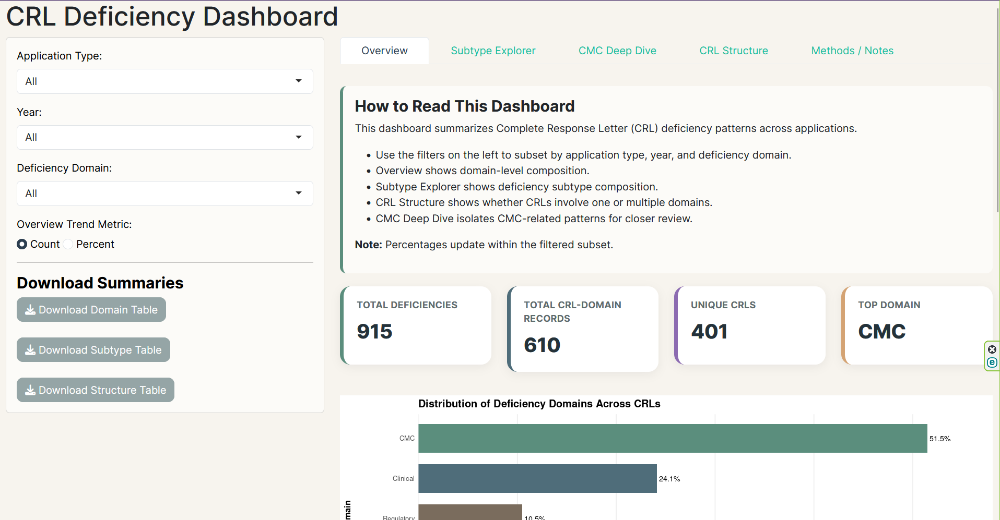

Project Snapshot
From raw FDA letters to structured analytics
401
Complete Response Letters coded
916
Individual deficiencies identified
6
Major review domains analyzed
SAS + R
Analysis and dashboard workflow
Explore the Portfolio
Research, Results, and Interactive Tools
Project Overview
Learn the motivation, workflow, methods, and research significance behind the project.
Open Project →Research Paper
Full write-up covering methodology, findings, limitations, and future directions.
Read Paper →Results
Statistical findings from frequencies, comparisons, and logistic regression models.
View Results →Featured Finding
CMC deficiencies were the most common issue identified across coded CRLs.
